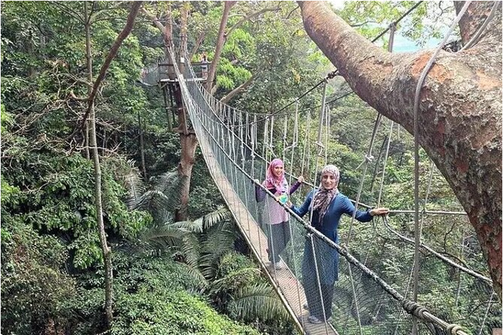
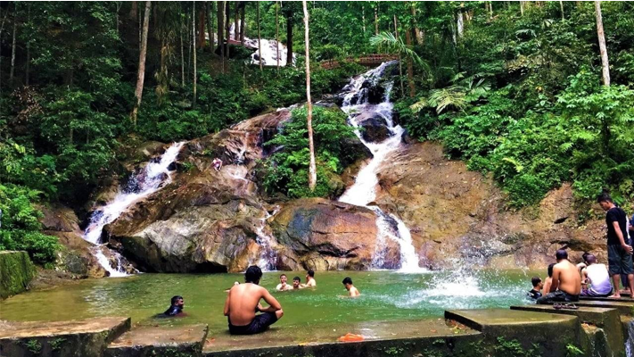
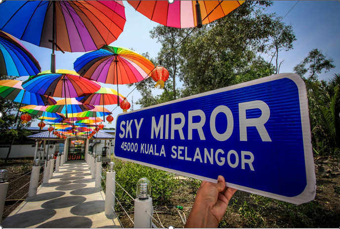
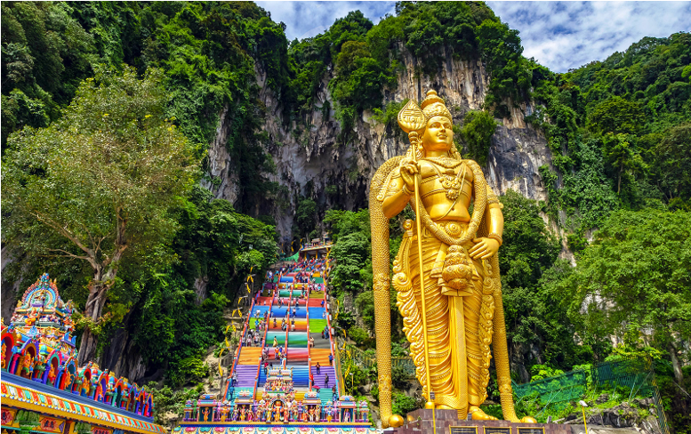
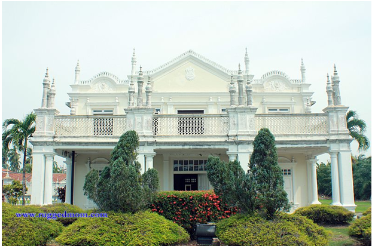
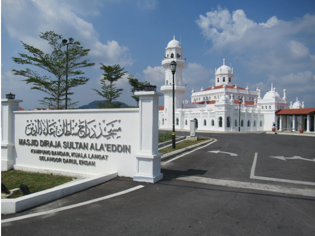
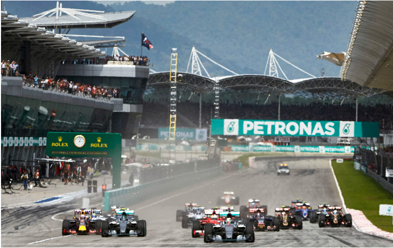
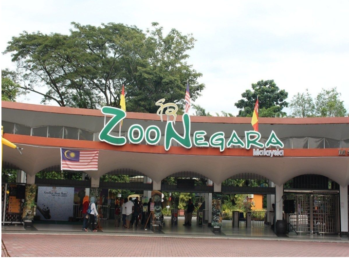

PESTA
Persatuan Penggiat Senibudaya Warisan Kraf Negeri Selangor
Persatuan Penggiat Senibudaya Warisan Kraf Negeri Selangor

Explore the canopy walkway and nature trails in Kepong.
(Hover for Info)
Main Attraction: Forest Skywalk
Ticket: RM15 (Adult), RM8 (Student)
Hours: 8.00 AM - 4.00 PM
*Closed on Fridays

A beautiful seven-tier waterfall located in Hulu Selangor/Rawang.
(Hover for Info)
Levels: 7 Tiers of waterfalls
Activity: Picnic & Jungle Trekking
Entry Fee: RM2 - RM5
Note: Careful of monkeys!

The "Salar de Uyuni" of Malaysia, located in Kuala Selangor.
(Hover for Info)
Location: Sasaran Beach
Access: Only accessible by boat
Best Time: New Moon & Full Moon
*Wear bright colors for photos!

Iconic limestone hill with a series of cave temples in Gombak.
(Hover for Info)
Climb: 272 colorful steps
Statue: Tallest Lord Murugan Statue
Festival: Thaipusam (Jan/Feb)
Entry: Free (Main Cave)

A historical palace built in 1905 featuring exquisite architecture.
(Hover for Info)
Built In: 1905
Location: Jugra, Kuala Langat
Features: 40 Rooms & Moorish design
Admission: Free

A heritage mosque located in Kampung Bandar, Kuala Langat.
(Hover for Info)
Full Name: Masjid Sultan Alaeddin
Style: Middle Eastern & Indian influence
Status: National Heritage Site

Home of Malaysian motorsport and international racing events.
(Hover for Info)
Events: MotoGP, GT Racing
Activities: Go-Kart, Track Days
Tour: Circuit guided tours available

The National Zoo located in Hulu Kelang, home to over 476 species.
(Hover for Info)
Famous For: Giant Pandas (Yi Yi & Sheng Yi)
Open: 9.00 AM - 5.00 PM
Shows: Multi-animal show daily